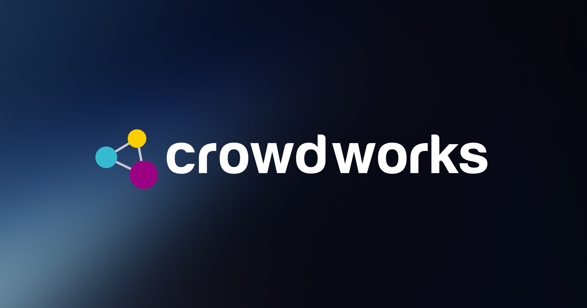

크라우드웍스 CrowdWorks
AI 학습데이터 라벨링을 크라우드소싱으로 해결하는 플랫폼
최종 업데이트

크라우드웍스는 어떤 브랜드인가
인공지능 모델 개발에는 대량의 정제된 학습 데이터가 필요하지만, 이를 직접 구축할 인력과 시스템을 갖추기 어려운 기업이 많았다. 크라우드웍스는 이런 데이터 라벨링 작업을 다수의 일반인에게 온라인으로 분산해 처리하는 크라우드소싱 플랫폼으로 2015년 창업됐다.
기업 고객에게는 정제된 학습 데이터를, 참여자에게는 부업 형태의 일자리를 제공하는 양면 플랫폼 구조를 갖췄다. 이후 국내 AI 데이터 시장 성장과 함께 사업을 확장해 코스닥에 상장했다.
크라우드웍스의 브랜드 아이덴티티는 무엇인가
AI 산업의 후방 공급망(데이터 라벨링)을 크라우드소싱 노동시장과 연결한 사례로, AI 기술 발전이 새로운 형태의 온라인 부업 일자리를 만들어내는 구조를 보여준다. AI 기업 고객 수요와 참여 인력 풀을 동시에 확대하는 양면시장 전략으로 데이터 처리량을 늘리며 성장했다.
크라우드웍스 연혁 — 주요 사건은 언제였나
크라우드웍스 로고는 어떻게 변해왔나
자주 묻는 질문
크라우드웍스는 어떤 산업의 브랜드인가요?
크라우드웍스는 AI·인공지능 분야의 브랜드입니다.
크라우드웍스의 브랜드 아이덴티티는 무엇인가요?
AI 산업의 후방 공급망(데이터 라벨링)을 크라우드소싱 노동시장과 연결한 사례로, AI 기술 발전이 새로운 형태의 온라인 부업 일자리를 만들어내는 구조를 보여준다.
출처와 검증
브랜드명은 한글과 원어를 함께 표기하되 데이터에 없는 표기는 만들지 않습니다. 기원 국가·설립연도는 검수된 정의문에서 확인된 값을 우선하고, 없을 때만 공식 웹사이트 URL이 일치하는 위키데이터 개체의 값을 씁니다.